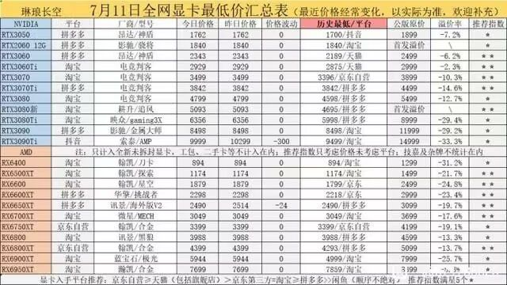

tsuki_夜隠し
@Tsuk1_qwq
@NL8526 我气死了，早就知道涨价，叫我妈提前买，楞是拖了半年，结果只能买天选6Pro……

柠凉🍥🏳️⚧️
@NL8526
好像从今年开始的毕业生 想跟家长要买高配电脑更难了，电脑集体涨价，但是家长真心支持还是没问题的，预算不充足只能压配。
去年的毕业生要是买了电脑真的是赚麻了，可惜我家长没有买。
（某某年的价格表 无意义） https://t.co/1oupqelUXH